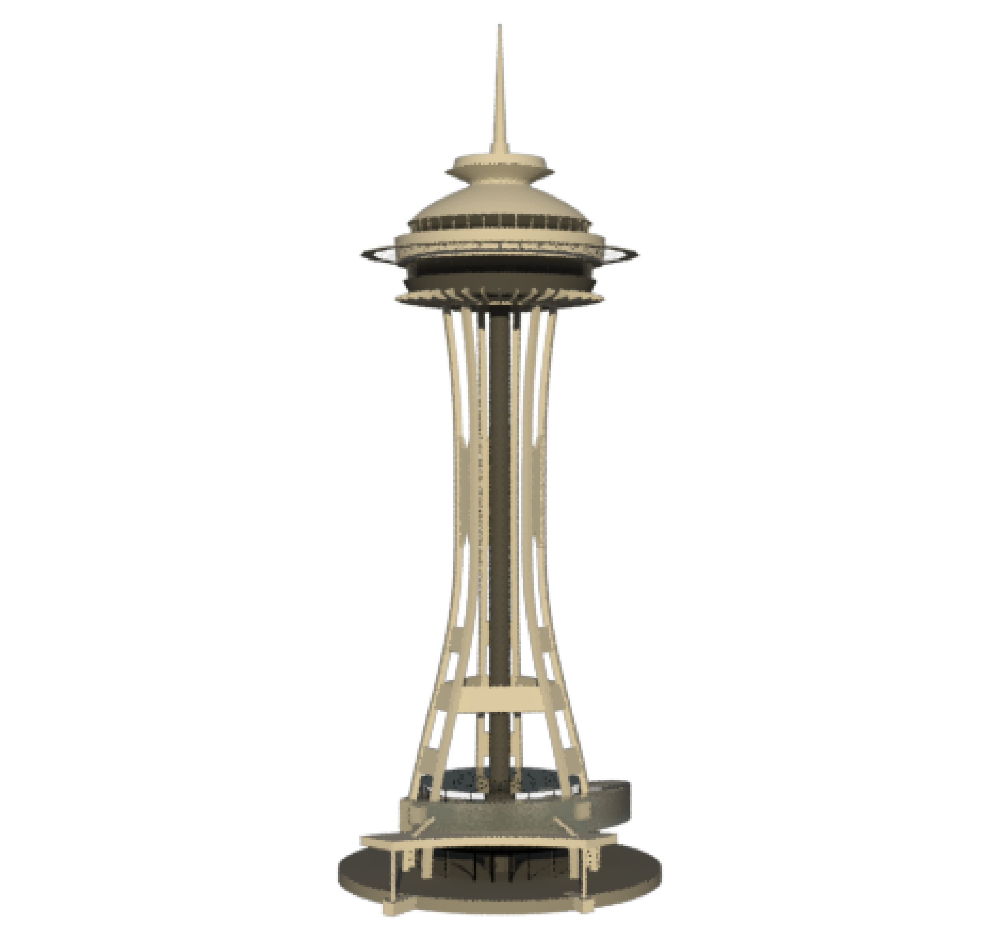
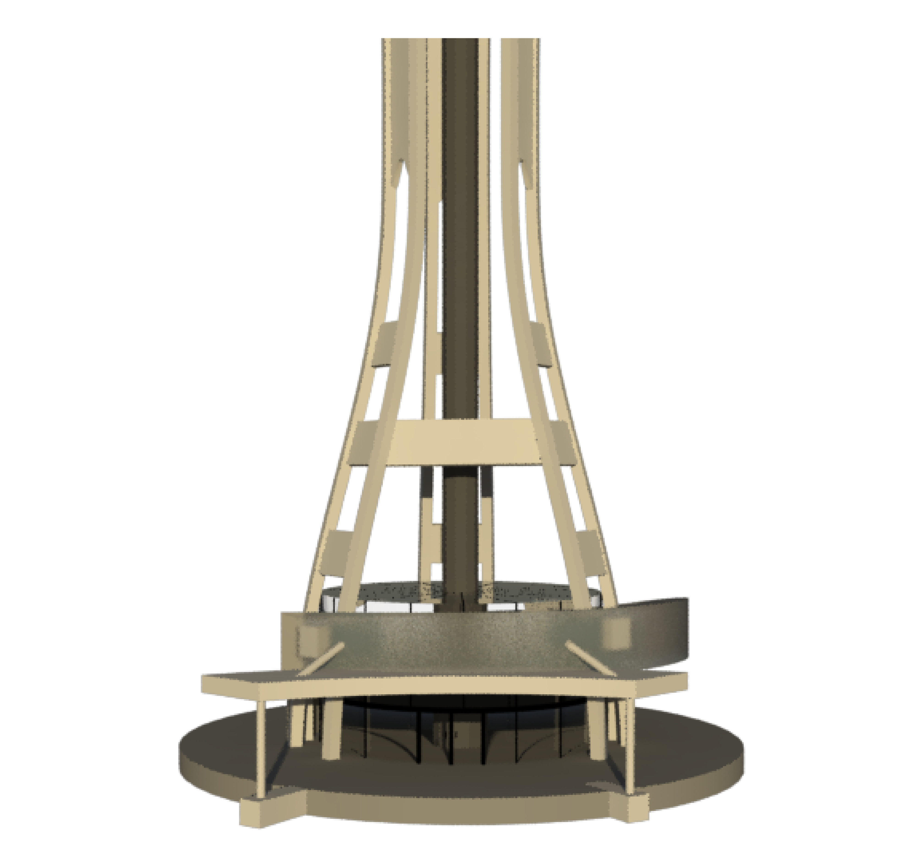
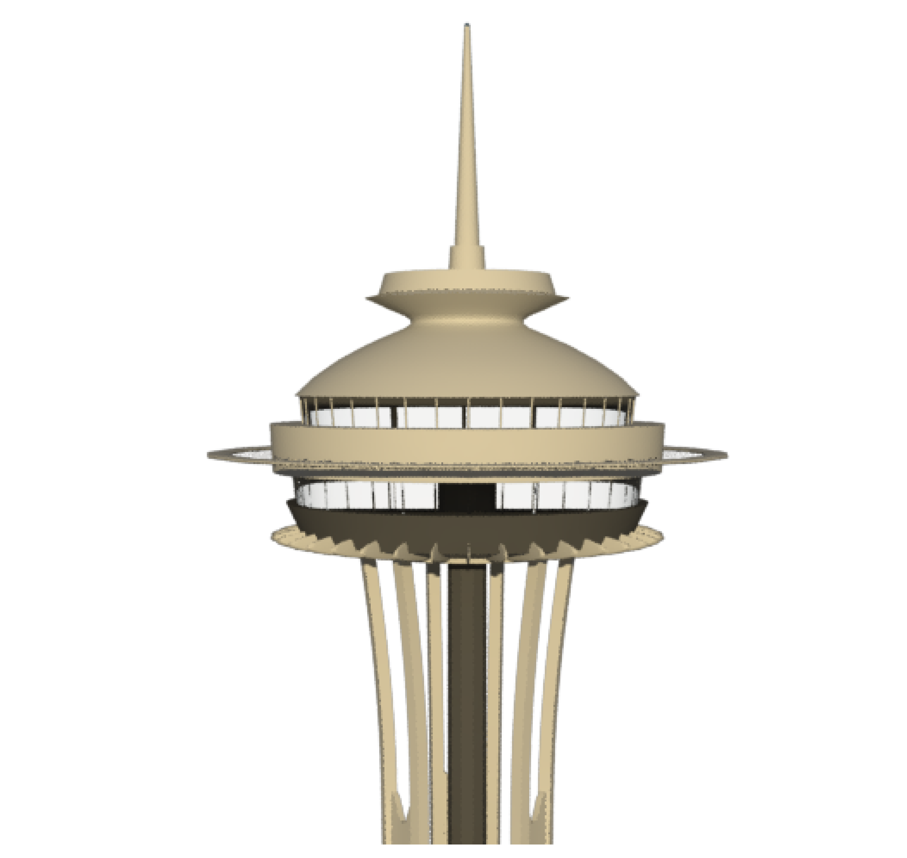
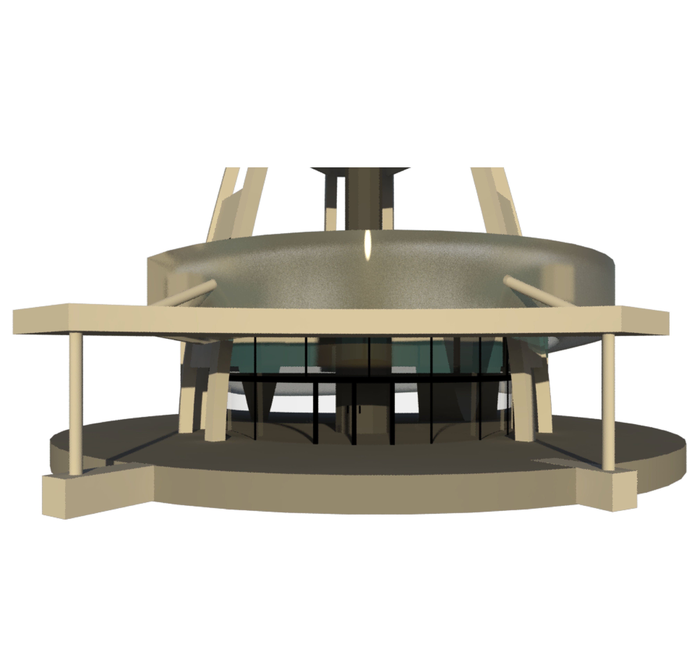
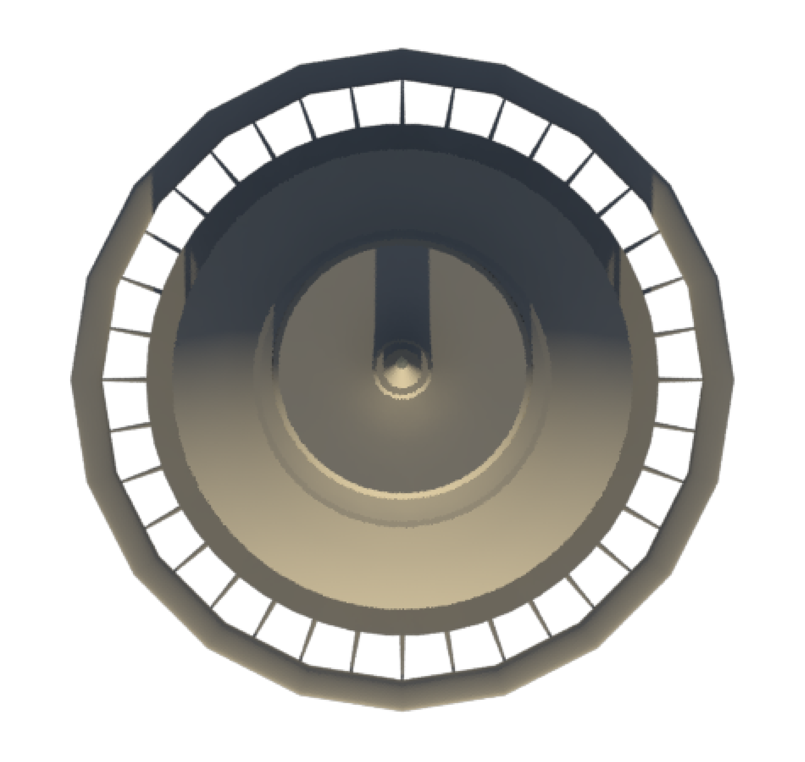

Seattle Space Needle Model (Maya)






3D Model, 2017
This is the Seattle Space Needle, modeled in Maya. This was one of the first intensive projects that I ever did in Maya. Utilizing all of the software, I was able to blend and sculpt the model to look exactly like reality.
This was inspired by a trip I took to Seattle with my family. Even though I am extremely scared of heights, we went to the top of the Space Needle. While I spent the entire time scared, looking at the structure from the ground was inspiring to see something that looked so light but also sticks so far into the sky.